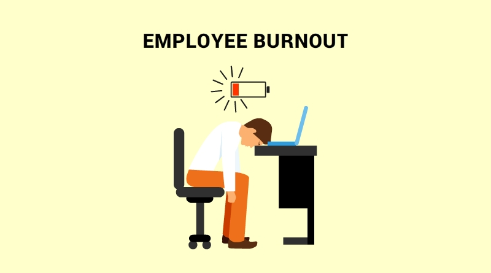

Are Employees Burning Out at work?

Team 4 is working on an employee burnout rate machine learning algorithm that will evaluate several factors.
The dataset was composed based on the current working from home situation due to the pandemic.
The Employee Burnout dataset consist of the following Factors
- Gender - The gender of the employee (Male/Female)
- Company Type - The type of company where the employee is working (Service/Product)
- WFH Setup Available - Is the work from home facility available for the employee(yes/No)
- Designation - The designation of the employee of work in the organization(0.0, 5.0) bigger is higher designation
- Resource Allocation- The amount of resource allocated to the employee to work, ie. number of working hours (1.0, 10.0) higher means more resource
- Mental Fatigue Score - The level of fatigue mentally the employee is facing (0.0, 10.0) higher means more resource
- Burn Rate - The value we need to predict for each employee telling the rate of Bur out while working. (0.0, 1.0) higher the value the more burnout